HEALTH TIPS
1. A garlic a day
Garlic is the mother of all cures. Researchers in Liverpool have found that 5ml of garlic extract lower levels of a disease-causing chemical by up to 48 per cent.
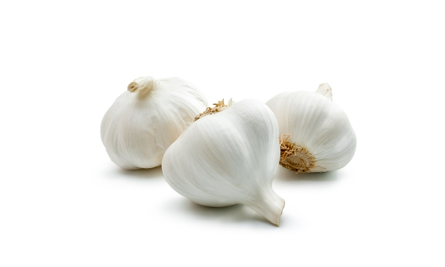
2. Eat wholegrain foods
Make sure you have whole-grain bread, rice or pasta at least four times a week and you will reduce the chance of having cancer by 40 per cent.
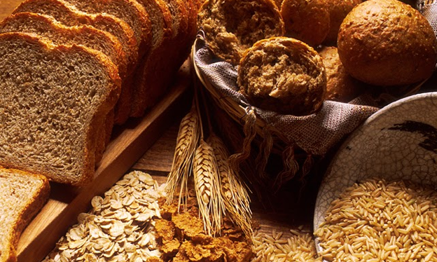
3. Take care of your skin
Always wear sun-screen lotion during summers. It is advisable to use winter care creams to overcome the harsh and cold winds. The best cure is to smile through and your skin will shine with an extra dash. It's no big secret!
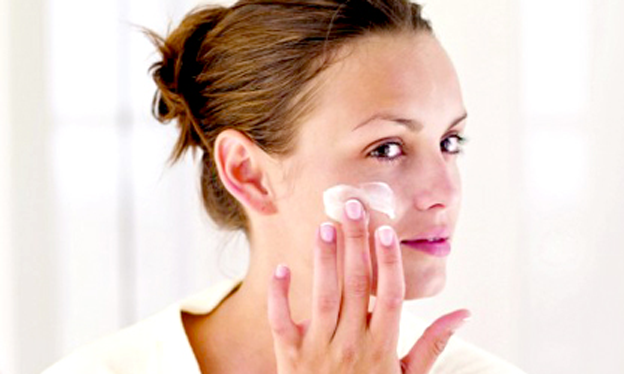
4. Eat plenty of fish
Fish is the recommended diet for a longer healthier life. Studies have found that those who regularly ate fish were up to one-third less likely to get heart disease than those who ate it less than once a month.
5. Try Tea
Tea is always good. Being a heavy tea-drinker can never have negative effects. The protective effects of tea increase with the amount drunk, and people who are regular tea drinkers are the least likely to die of a heart attack.
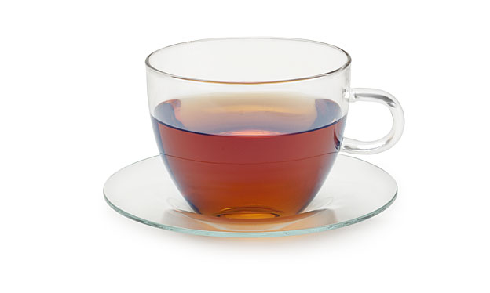
6. Stop smoking
Do not smoke your health away. Nicotine patches, gums or inhalers might work for some individuals, or other methods, from hypnosis to acupuncture. More you are to smoke, more likely your are to develop cancer or heart disease.
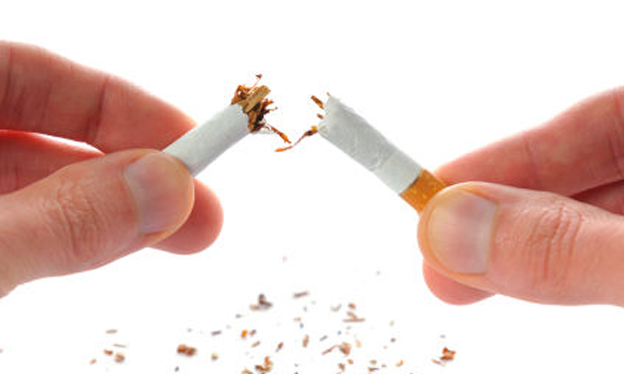
7. Walk for Health
There is nothing better than walking. Walking a mile everyday, or taking reasonable exercise three times a week, promises to reduce the risk of heart disease, as well as strengthens bones and keeps them strong.
8. Never sleep over a backache
It is never advisable to sleep over a backache. Research shows that people who take to their beds with backache take the longest time to recover. Those who avoid bed-rest and continue normal activities as much as possible have less pain.

9. Water spells health
Water flushes out the toxins. A good amount of liquid intake helps the entire system and of course is best for curing skin ailments. The average man needs 2.9 litres, or about 12 cups of water, a day and woman needs about 2.2 litres.
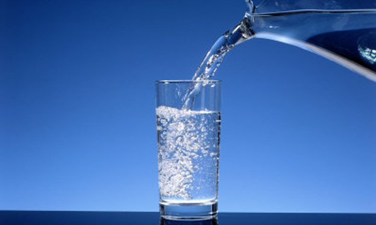
10. Stop bad breath
You can prevent that unfriendly odour. It is caused by oral bacteria. A tongue scraper may help, but dental care may be needed. Mouth rinses are effective, as are flossing and brushing teeth twice a day.
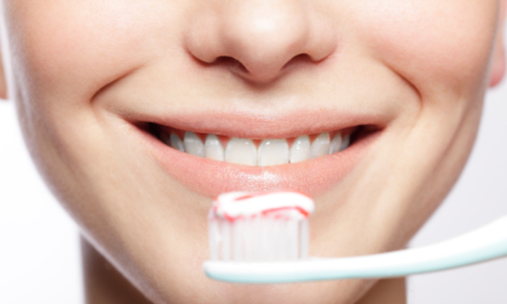
11. Slow down on the junk
Research shows that eating too many high-fat-food contributes to high blood-cholesterol levels, which can cause hardening of the arteries, coronary heart disease and stroke.
12. Cut back on salt
Health Organisation recommend no more than five grams a day. Too much salt can lead to stroke and heart problems.
13. Drink wine
Research suggests that the equivalent of a couple of glasses of wine a day may be good for health. It can also help you keep a good mental frame.
14. Eat right for better teeth
Your pearly whites can gleam. Eat apples, oranges, celery, carrots and high fiber green.
15. Make love
There is no better medicine than to have sex. people who have sex at least twice a week get protective boost from their immune systems. Of course it relaxes the mind.

16. Crash diets don't work
The so called new-age diets do not add to health prospects. There is no easy way to lose weight so the best way is to do it over a period of time.
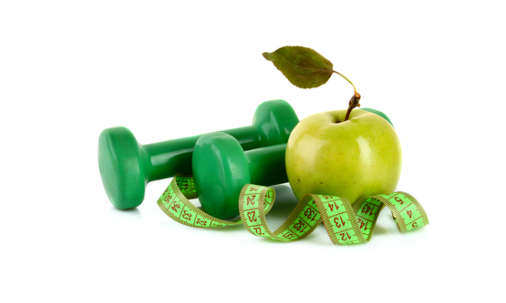
17. Coffee is good
Researchers have found that two to four cups of coffee daily can lower the risk of colon cancer by 25 per cent.
18. Being overweight is dangerous
Loose the extra kilos. Over weight people cut 20 weeks of their life for every excess kilogram, according to new research.Keeping a personal weight machine at home really helps. Buy one now!
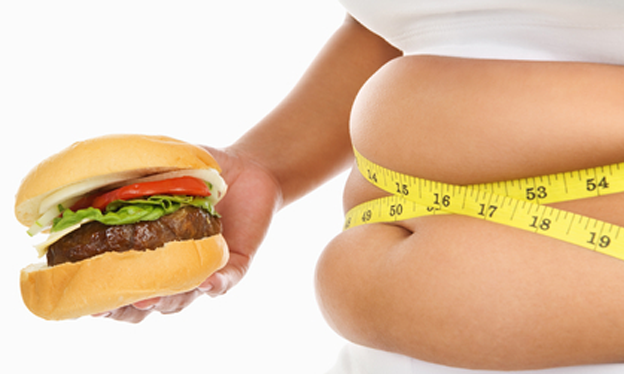
19. Supplement with selenium
Research has shown that people who took a daily supplement of selenium had a 37 per cent reduction in cancers.
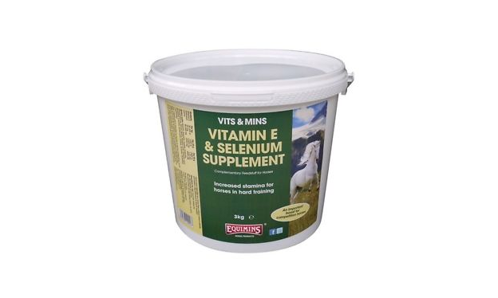
20. Lower your cholesterol
Work on reducing your cholesterol. This can reduce the risk of heart attack and stroke even when your level is not high. Exercise to reduce weight.
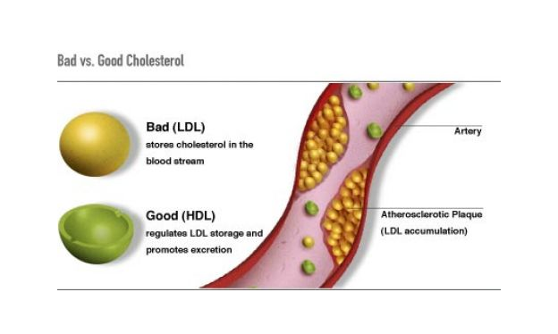
21. Asprin is a wonder drug
Asprin can actually do wonders. It helps to reduce the risk of conditions such as heart disease and cancers, including of the colon, oesophagus, stomach, rectum, prostrate. cent.
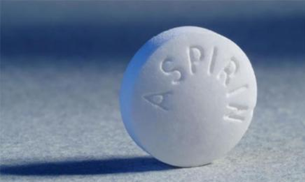
22. Change your job
If the workplace is what bothers you. Simply quit! Consider becoming a salesperson. Salespeople are least likely to have a work-related illness.
23. Socialising is good
Meeting friends and relatives is recommended. Weekly socialising improves the memory, concentration and problem solving skills.
24. Learn to relax
Unwind, take up a hobby and start socialising. This fights stress and depression.
25. Fruits and vegetables help
Have at least five portions of vegetables and fruit a day, especially tomatoes, red grapes.
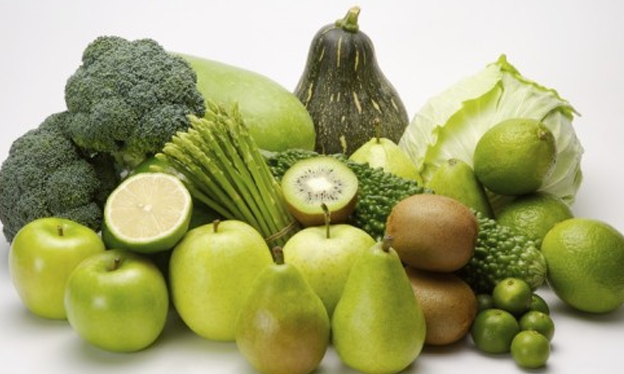
26. Sing to stay healthy
Singing is good for the mind and body. it is relaxing, improves breathing and muscle tone.
27. Vitamins are vital
A multivit a day keeps the tablet away, but be sure it contains at least 200 meg of folic acid.
28. Sleep well
There is nothing like a good sleep. Sleep primes the immune system. Most people need between seven and nine hours of sleep a night.
29. Or just hum...
Humming helps. Daily humming is a good way to increase ventilation in the sinuses.